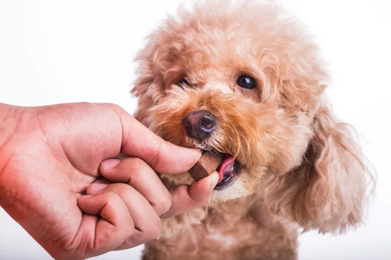

Service
Lab tests, analysis, and bloodwork are essential for medical diagnosis, especially internal medicine. While physical evaluation, performance evaluation, and behavior over time can speak a lot, the inner balance of a pet’s body is indicated at the chemical level. Our Caring Hands Veterinary Clinic in Philadelphia, PA, is where bloodwork and lab tests show the most about what’s happening inside a pet.

Process and Medical Approach
Once blood is drawn, it goes through a battery of tests and microscopic analysis. Today, the research is applied with various chemical tests that quickly indicate the results. It’s a process originally learned from human medicine and transferred to veterinarian medicine with modification and understanding of animal health science. In summary, the method provides a veterinarian with a window into the pet’s body to evaluate oxygen levels, kidney and liver conditions, disease indicators, diabetes or leukemia, pancreas status, and much more. No surprise, bloodwork is a traditional testing approach for a pet wellness exam strategy at vet clinics in Philadelphia..
Scheduling and Application
Usually, a scheduled bloodwork draw and the test is typically applied annually. If the pet has an already-identified condition, the bloodwork may be used more frequently to track the condition's status, improvement, or deterioration. While bloodwork won’t identify every ailment in a pet, it has been a reliable and consistent tool for vets and animal health teams, even with today’s computer technology and increased ability to see inside an animal’s body with other devices and systems.
Timing Bloodwork for Results
While there is no magical notice or signal that goes up when a pet needs bloodwork to identify concerns, our trained veterinarian will apply for lab work when they know the results combined with visible symptoms are likely to tell a better story of what’s going on with a pet’s health condition. It’s a science of understanding the results. White blood cell counts, certain proteins, and the absence of other elements confirm a given organ or hormone condition. Our veterinarian just needs to know what to look for.
Visit Our Office
aring Hands Veterinary Clinic in Philadelphia, PA, combines hands-on veterinarian treatment with bloodwork and lab work for a full diagnostic review. If your pet feels under the weather, schedule an exam with us. Call us at (215) 621-8959 to schedule an appointment!
Having strong teeth is an important part of maintaining overall pet health. Poor teeth not only impact your pet’s ability to digest food but could also lead to other significant health issues.
We at Caring Hands Veterinary Clinic offer preventative care to help ensure that your pet stays healthy. If you are that your pet may be developing a pet dental disease, schedule an appointment with our veterinarian here in Philadelphia, PA. Here’s a closer look at some of the dental diseases that pets are vulnerable to.

Signs that Your Pet May Have Dental Disease
Discolored teeth, bleeding, and swollen gums are possible signs of pet disease. Another potential sign is your pet having a reduced appetite. Painful abscesses and tumors may develop inside your pet’s mouth that restricts his appetite. You may also start to notice some behavioral changes. Take your pet to our vet if you notice any of these problems before things become more serious.
Periodontal Disease
Periodontal disease is a common issue that pets may deal with, especially as they get older. This disease spreads through inflamed tissues that eventually damage the root and bone. Once the disease enters the bone, it starts to get weaker.
We can provide thorough teeth cleaning here at Caring Hands Veterinary Clinic to prevent your pet from developing a dental disease. In addition to bad breath, periodontal disease also exposes pets to potentially developing heart, liver, and kidney problems. Routine preventive care can prevent this disease.
How to Prevent Dental Disease
In addition to regular brushing, consider purchasing chew toys that are designed to promote good oral health. Consider evaluating your pet’s diet as well. Some companies have created healthy treats that are designed to help prevent plaque and tartar buildup.
Get Teeth Cleaning and Preventative Care from Our Vet
Maintaining good oral health prevents your pet from developing more serious health issues in the future. We offer thorough teeth cleaning exams where we’ll check for potential teeth decay and other issues. We are committed to making sure your pet receives the preventative care he needs. Schedule an appointment today in Philadelphia, PA, for teeth cleanings, and other important pet dental care. Call us at (215) 621-8959 for our veterinarian at Caring Hands Veterinary Clinic.
Understanding Deworming and Protecting Your Pet
At Caring Hands Veterinary Clinic, Dr. Thomas and our team prioritize the health and happiness of Philadelphia pets. One crucial aspect of keeping your furry friend thriving is parasite prevention, and deworming plays a vital role in this. While internal parasites like worms might seem inconsequential, they can significantly impact your pet's well-being.
The Risks of Internal Parasites
Roundworms, hookworms, tapeworms, and whipworms are common internal parasites that live in your pet's digestive system. They steal nutrients, causing weight loss, anemia, and digestive issues like vomiting and diarrhea. In severe cases, they can even migrate to other organs, posing serious health risks.
The Importance of Deworming
Deworming medications effectively eliminate these internal parasites, protecting your pet from their harmful effects. Regular deworming schedules, determined by your veterinarian near you, ensure your furry friend enjoys optimal health and prevents the spread of parasites to other animals and even humans.
Puppies and Kittens
Puppies and kittens are particularly susceptible to worm infestations due to their developing immune systems. At Caring Hands Veterinary Clinic, we recommend early and frequent deworming for growing pups and kittens to ensure their healthy development.
The Heartworm Connection
Did you know some intestinal worms can transmit heartworm disease, a potentially fatal condition spread by mosquito bites? Deworming can play a crucial role in preventing this dangerous disease, offering an added layer of protection for your Philadelphia pet.
Tailored Deworming
The type and frequency of deworming required depends on your pet's age, breed, lifestyle, and exposure risk. Consulting a veterinarian near you is essential for developing a personalized deworming plan that effectively protects your furry friend from internal parasites.
Peace of Mind and a Healthy Companion
Regular deworming is a simple yet powerful preventative measure that safeguards your pet's health and well-being. By prioritizing this essential practice, you can ensure your Philadelphia companion enjoys a happy and healthy life free from the harmful effects of internal parasites.
Don't let unseen threats compromise your pet's health. Call Caring Hands Veterinary Clinic at (215) 621-8959 today to discuss the best deworming plan for your furry friend. Remember, proactive care is key to a joyful and healthy life for your pet, and Caring Hands Veterinary Clinic is dedicated to being your partner in their well-being journey.
If you require any veterinary care for your furry friend, Caring Hands Veterinary is here for you. Dr. Thomas has been working as a vet since 2003 to help animals have optimum health. He has also worked for many rescue organizations in Philadelphia to help sterilize and neuter animals.
His vast experience has helped him provide efficient and quality care for pets. You can bring your pet to our clinic in Philadelphia, PA, to get the best treatment procedures, including pet eye and ear surgery.
Are You Concerned with Your Pets’ Eye or Ear Functioning?
The eyes are the window to the soul and your pets can melt your heart with just a look. This is why it is disheartening if they have an eye problem. Just as eyesight, hearing is also very crucial for pets. There are many eye and ear problems that can affect your pet. However, this should not worry you. Dr. Thomas, our veterinarian, uses state-of-the-art specialized testing and treatment methods to ensure that your pets get better. Here are common eye and ear conditions that most pets suffer from:
Eye Conditions and Diseases
- Varying Eyelid Masses
- Glaucoma
- Cherry Eye/Third Eyelid Hypertrophy
- Corneal Ulcers
- Lacrimal Duct Blockage
- Eye Infection
- Tear Production Disorders
Ear Conditions & Diseases
- Aural Hematoma
- Ear Infections
- Cysts
- Ear Mites
How Our Vet Determines if Your Pet Needs Surgery
Before surgery is considered, Dr. Thomas does a full ear or eye examination on your animal friend. He then diagnoses the condition and identifies the best and safest treatment for your pet. If your pet needs surgery, he will first tell you the type of pet surgery, the effects, and how to care for your pet after the procedure.
Types of Pet Surgeries (Eye and Ear)
With advanced equipment and techniques, Caring Hands Veterinary offers enhanced pet surgeries to correct any conditions involving your pet’s ears and eyes.
Pet Eye Surgeries
Some of the pet eye surgeries that are common include:
- Construction of third eyelid and conjunctival flaps
- Lacerations of the eyelids
- Repositioning of the prolapsed gland of the third eyelid
- Corneal and conjunctival lacerations
Pet Ear Surgeries
Some of the most common pet ear surgeries include:
- Ventral bulla osteotomy
- Vertical ear canal ablation
- Excision of tumors of the ear
- Total ear canal ablation
Trust Our Veterinarian, Dr. Thomas, for Exceptional Veterinary Services
If you live in Philadelphia, PA, it’s time you get your pets the best veterinarian for their eye and ear issues. Caring Hands Veterinary strives to give you the best treatment methods that favor both you and your precious animals. Visit us or call us today at (215) 621-8959 to help your pets get back their optimum eye and ear health.